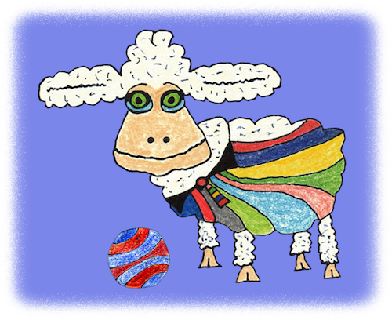

Sheep¶

The rainbow mind machine sheep. credit
Structure of the Sheep:
-
Constructor:
- Create lumberjack logger
- Initialize Twitter API instance
- Initialize parameters from JSON file (sheep-specific/account-specific parameters)
- Initialize parameters passed into constructor (overwrites JSON file parameters)
- These parameters are available as
self.params
-
Twitter API initialization method:
- Initializes Twitter API
- Uses
self.paramsto set consumer token - Uses parameters from JSON file to get oauth token
-
Perform action method(s):
- Uses dispatcher method
- If we call
perform_action('tweet'), this will look for a method calledtweet()and run it.
-
Action methods (general template):
- User will pass in extra parameters (action-specific parameters)
- Parameter validation
- Set API endpoint
- Use oauth token to create oath Client object
- use client to make POST request
-
Tweet method:
- Tweet method has an inner loop and an outer loop
- In the inner loop the bot populates a queue and tweets each tweet in the queue
- In the outer loop (infinite loop) the bot continually repeats the inner loop
- Inner sleep/outer sleep set the time interval between tweets and between runs of the inner loop